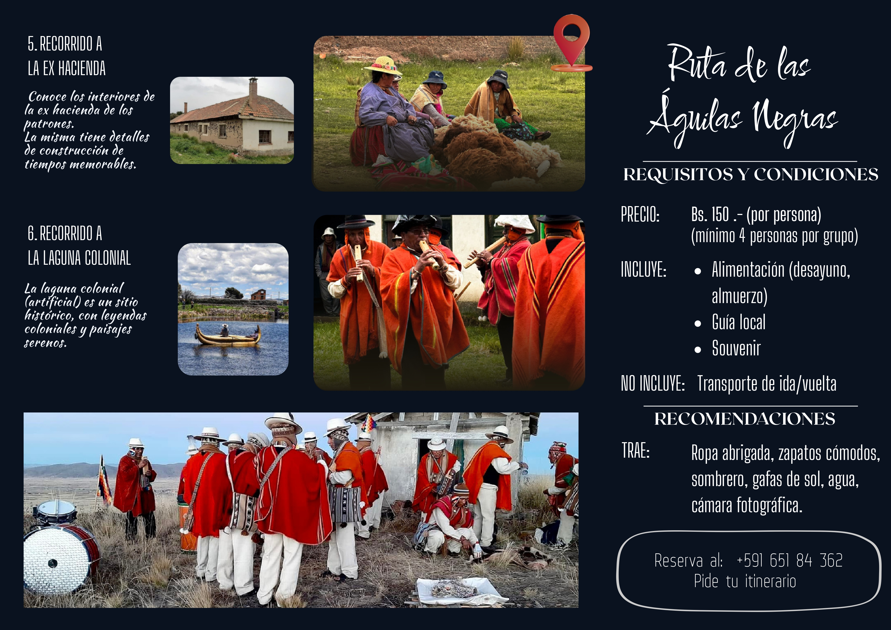
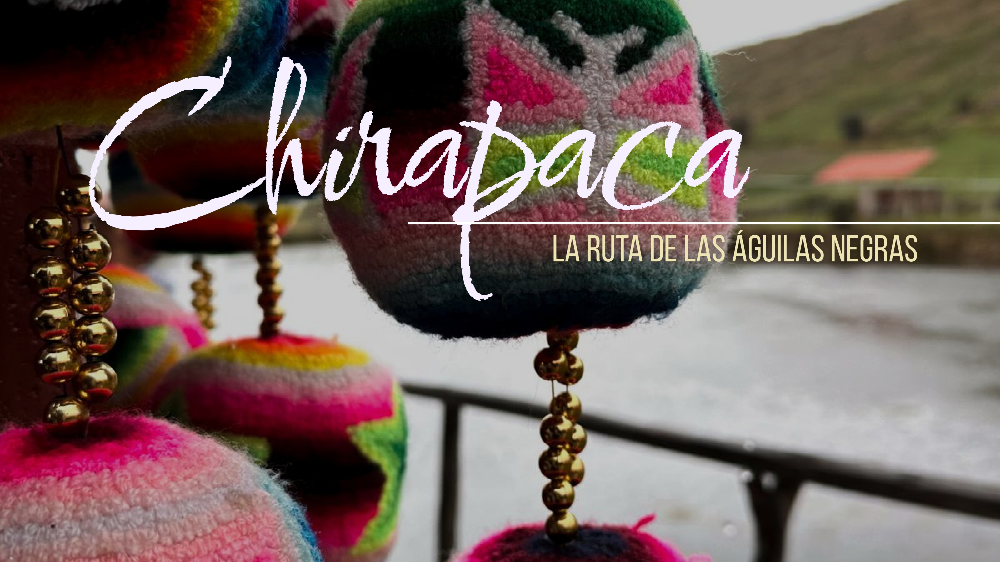
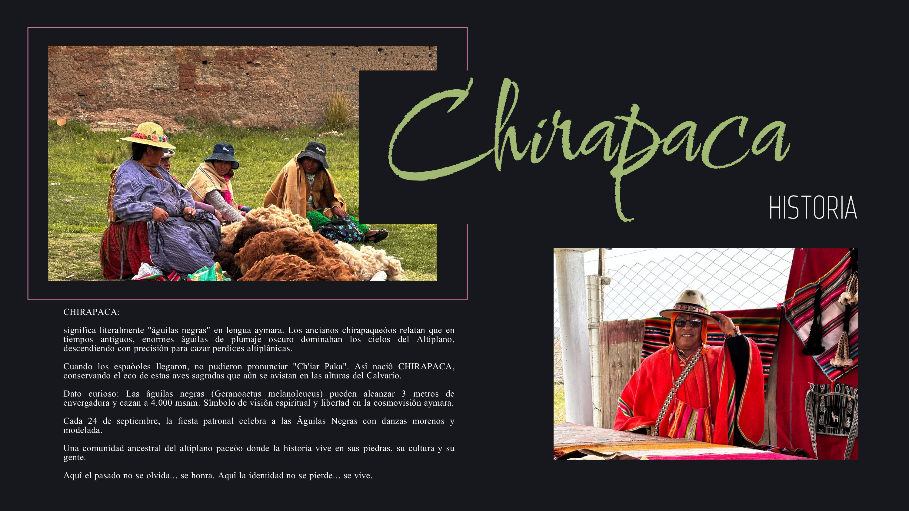

La comunidad de Chirapaca se encuentra ubicada en el municipio de Batallas, provincia Los Andes, departamento de La Paz – Bolivia. Está aproximadamente a 55 km de la ciudad de La Paz, en la carretera Río Seco – Copacabana. Altitud aproximada: 3.860 – 3.890 m s.n.m. en el altiplano norte. Se encuentra cerca del Lago Titicaca y del municipio de Batallas. La comunidad tiene una población aproximada de 1800 habitantes.
Vive la emoción del descenso en bicicleta desde la cima del Calvario! Un recorrido adrenalínico de 8 km por senderos altiplánicos con vistas panorámicas del Lago Titicaca y la Cordillera. Equipamiento completo y guías expertos incluidos.
Guías locales bilingües (aymara-español) certificados, conocedores de las leyendas de las Águilas Negras y rutas secretas. Te llevarán por senderos ancestrales, contándote historias que solo los chirapaqueños conocen.
Noches inolvidables bajo el cielo más estrellado del Altiplano. Áreas equipadas con carpas, fogatas, desayuno al amanecer con vistas al nevado. Experiencia 100% inmersiva.
Explora el Museo de la Ex-Hacienda de los Patrones, tesoro histórico con piezas coloniales únicas: monedas de la época, herramientas agrícolas prehispánicas, textiles aimaras de 200 años y el archivo de las encomiendas españolas.
Bienvenida gastronómica auténtica: Desayuno chirapaca tradicional con api morado, buñuelos crujientes, queso fresco de altura y humintas recién hechas. Todas las comidas con ingredientes orgánicos de las chakras locales.
